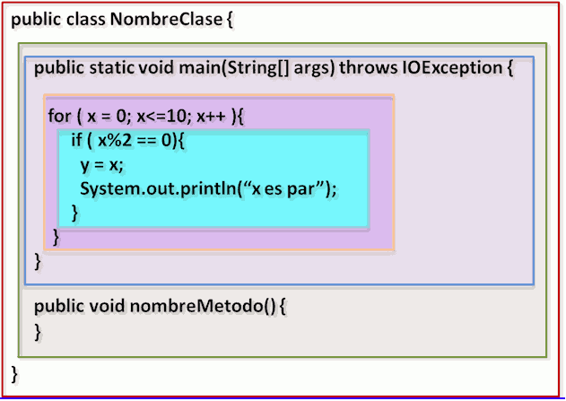
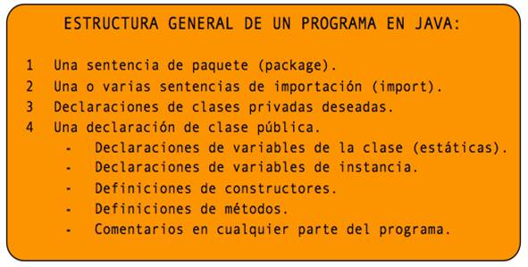

<!doctype html>
<html lang="ca">
<head>
<link rel="stylesheet" type="text/css" href="base.css" />
<link rel="stylesheet" type="text/css" href="content.css" />
<link rel="stylesheet" type="text/css" href="nav.css" />
<meta http-equiv="content-type" content="text/html;  charset=utf-8" />
<title>1. Estructura de un programa | tema2 </title>
<link rel="shortcut icon" href="favicon.ico" type="image/x-icon" />
<meta name="author" content="Fran Jaraba" />
<link rel="license" type="text/html" href="http://creativecommons.org/licenses/by-sa/4.0/" />
<meta name="generator" content="eXeLearning 2.8.1 - exelearning.net" />
<!--[if lt IE 9]><script type="text/javascript" src="exe_html5.js"></script><![endif]-->
<script type="text/javascript" src="exe_jquery.js"></script>
<script type="text/javascript" src="common_i18n.js"></script>
<script type="text/javascript" src="common.js"></script>
<meta name="viewport" content="width=device-width, initial-scale=1" />
</head>
<body class="exe-web-site" id="exe-node-2"><script type="text/javascript">document.body.className+=" js"</script>
<div id="content">
<p id="skipNav"><a href="#main" class="sr-av">Omet navegació</a></p>
<header id="header" ><div id="headerContent">tema2</div></header>
<nav id="siteNav">
<ul>
   <li><a href="index.html" class="daddy main-node">Programació</a></li>
   <li class="current-page-parent"><a href="estructura_de_un_programa_datos_e__s.html" class="current-page-parent daddy">Estructura de un programa. Datos. E / S</a>
   <ul>
      <li id="active"><a href="1_estructura_de_un_programa.html" class="active no-ch">1. Estructura de un programa</a></li>
      <li><a href="2_tipos_de_datos_variables_y_constantes.html" class="daddy">2. Tipos de datos, variables y constantes</a>
      <ul class="other-section">
         <li><a href="21_variables.html" class="no-ch">2.1. Variables</a></li>
         <li><a href="22_constantes.html" class="no-ch">2.2. Constantes</a></li>
         <li><a href="23_conversin_de_tipos.html" class="no-ch">2.3. Conversión de tipos</a></li>
         <li><a href="24_variables_y_objetos_valores_primitivos_y_referencia.html" class="no-ch">2.4. Variables y objetos. Valores Primitivos y Referencia</a></li>
         <li><a href="25_clases_de_envoltura.html" class="no-ch">2.5. Clases de envoltura</a></li>
      </ul>
      </li>
      <li><a href="3_expresiones_y_operadores.html" class="no-ch">3. Expresiones y operadores</a></li>
      <li><a href="4_clases_y_objetos.html" class="daddy">4. Clases y Objetos</a>
      <ul class="other-section">
         <li><a href="41_la_clase_principal_y_el_mtodo_main.html" class="no-ch">4.1. La clase principal y el método main</a></li>
         <li><a href="42_librera_de_clases_java.html" class="no-ch">4.2. Librería de clases Java</a></li>
      </ul>
      </li>
      <li><a href="5_entrada__salida.html" class="no-ch">5. Entrada / Salida</a></li>
      <li><a href="6_cadenas.html" class="no-ch">6. Cadenas</a></li>
      <li><a href="7_expresiones_regulares_en_java.html" class="no-ch">7. Expresiones regulares en Java</a></li>
      <li><a href="8_otras_clases_de_inters.html" class="no-ch">8. Otras clases de interés</a></li>
   </ul>
   </li>
   <li><a href="estructura_dun_programa_dades_e__s.html" class="daddy">Estructura d'un Programa. Dades. E / S</a>
   <ul class="other-section">
      <li><a href="1_estructura_dun_programa_java.html" class="no-ch">1. Estructura d'un programa Java</a></li>
      <li><a href="2_tipus_de_dades_variables_i_constants.html" class="daddy">2. Tipus de dades, variables i constants</a>
      <ul class="other-section">
         <li><a href="21_variables0.html" class="no-ch">2.1. Variables</a></li>
         <li><a href="22_constants.html" class="no-ch">2.2. Constants</a></li>
         <li><a href="23_conversi_de_tipus.html" class="no-ch">2.3. Conversió de tipus</a></li>
         <li><a href="24_variables_i_objectes_valors_primitius_i_referncia.html" class="no-ch">2.4. Variables i objectes. Valors Primitius i Referència</a></li>
         <li><a href="25_classes_denvoltura.html" class="no-ch">2.5. Classes d'envoltura</a></li>
      </ul>
      </li>
      <li><a href="3_expressions_i_operadors.html" class="no-ch">3. Expressions i operadors</a></li>
      <li><a href="4_classes_i_objectes.html" class="daddy">4. Classes i Objectes</a>
      <ul class="other-section">
         <li><a href="41_la_classe_principal_i_el_mtode_main.html" class="no-ch">4.1. La classe principal i el métode main</a></li>
         <li><a href="42_llibreria_de_classes_java.html" class="no-ch">4.2. Llibreria de classes Java</a></li>
      </ul>
      </li>
      <li><a href="5_entrada__eixida.html" class="no-ch">5. Entrada / Eixida</a></li>
      <li><a href="6_cadenes.html" class="no-ch">6. Cadenes</a></li>
      <li><a href="7_expressions_regulars_a_java.html" class="no-ch">7. Expressions regulars a Java</a></li>
      <li><a href="8_altres_classes_dinters.html" class="no-ch">8. Altres classes d'interès</a></li>
   </ul>
   </li>
   <li><a href="ejercicios.html" class="no-ch">Ejercicios</a></li>
</ul>
</nav>
<div id='topPagination'>
<nav class="pagination noprt">
<a href="estructura_de_un_programa_datos_e__s.html" class="prev"><span><span>&laquo; </span>Anterior</span></a> <span class="sep">| </span><a href="2_tipos_de_datos_variables_y_constantes.html" class="next"><span>Següent<span> &raquo;</span></span></a>
</nav>
</div>
<div id="main-wrapper">
<section id="main">
<header id="nodeDecoration"><h1 id="nodeTitle">1. Estructura de un programa</h1></header>
<article class="iDevice_wrapper textIdevice" id="id0">
<div class="iDevice emphasis0" >
<div id="ta0_120_2" class="block iDevice_content">
<div class="exe-text"><p>Un archivo de <strong>código fuente</strong> Java debe tener la extensión<span style="color: #0000ff;"><strong> .java</strong> </span>y los archivos con <strong>código objeto</strong> tendrán la extensión<span style="color: #0000ff;"><strong> .class</strong></span>. El <span style="text-decoration: underline;">nombre del archivo fuente debe coincidir con el nombre de la clase  pública</span> que contiene.</p>
<p style="text-align: center;"></p>
<p>Un <strong>programa</strong> describe cómo un ordenador debe interpretar las órdenes del programador para que ejecute y realice las instrucciones dadas tal como están escritas. Un programador utiliza los <strong>elementos</strong> que ofrece un lenguaje de programación para diseñar programas que resuelvan problemas concretos o realicen acciones bien definidas. El siguiente programa Java muestra un mensaje en la consola con el texto “Hola Mundo”.</p>
<pre><span style="font-size: 10pt; color: #008000;"><span style="text-decoration: underline;"><span style="color: #993366; text-decoration: underline;">HolaMundo.java</span></span><br />/*</span><br /><span style="font-size: 10pt; color: #008000;">* Este programa escribe el texto "Hola Mundo" en la consola</span><br /><span style="font-size: 10pt; color: #008000;">* utilizando el método System.out.println()</span><br /><span style="font-size: 10pt; color: #008000;">*/</span><br /><span style="font-size: 10pt;"><span style="color: #0000ff;">public</span> <span style="color: #0000ff;">class</span> HolaMundo {</span><br /><span style="font-size: 10pt;"><span style="color: #0000ff;">    public static void</span> main (<span style="color: #0000ff;">String</span>[] args) {</span><br /><span style="font-size: 10pt;"><span style="color: #0000ff;">        System.out.println</span>("Hola Mundo");</span><br /><span style="font-size: 10pt;">    }</span><br /><span style="font-size: 10pt;">}</span></pre>
<p>En un programa Java podemos encontrar los siguientes elementos:</p>
<ul>
<li><span style="color: #0000ff;"><strong>Comentarios</strong></span>: existen tres tipos de comentarios.
<ul>
<li><strong>Comentario de bloque</strong>. Empieza por<strong><span style="color: #0000ff;"> /*</span></strong> y termina por <span style="color: #0000ff;">*/</span>. El compilador ignora todo el texto contenido dentro del comentario.</li>
<li><strong>Comentario de documentación</strong>. Empieza por<span style="color: #0000ff;"><strong> /**</strong></span> y termina por <strong><span style="color: #0000ff;">*/</span></strong>. Java dispone de la herramienta <strong>javadoc</strong> para documentar automáticamente los programas. En un comentario de documentación normalmente se indica el autor y la versión del software. Se recomienda que cada línea, además, comienze por</li>
<li><strong>Comentario de línea</strong>. Empieza con <span style="color: #0000ff;"><strong>//</strong></span>. El comentario comienza con estos caracteres y termina al final de la línea.<br /><br /></li>
</ul>
</li>
<li><span style="color: #0000ff;"><strong>Identificadores</strong></span>: son nombres que el programador pone a elementos del programa (<em>variables, métodos, clases, etc</em>).  Existen reglas muy estrictas sobre los nombres que se utilizan como identificadores de clases, de variables o de métodos.
<ul>
<li>Todo identificador debe <strong>empezar con una letra</strong> que puede estar <strong>seguida de más letras o dígitos o el carácter "<span style="color: #0000ff;">_</span>" o "<span style="color: #0000ff;">$</span>"</strong>.</li>
<li>Un identificador <strong>no puede coincidir con una palabra reservada</strong> de Java.</li>
<li>Se <strong>distingue</strong> entre <strong>letras mayúsculas y minúsculas</strong>.</li>
<li>Existen unas <strong>normas básicas</strong> para los identificadores que se deben <strong>respetar</strong>.<br />
<ul>
<li>Los <strong>nombres de variables y métodos</strong> <strong>empiezan con minúsculas</strong>. Si se trata de un nombre compuesto cada palabra debe empezar con mayúscula y no se debe utilizar el guión bajo para separar las palabras: calcularSueldo, setNombre, getNombre.</li>
<li> Los <strong>nombres de clases</strong> empiezan siempre con <strong>mayúsculas</strong>. En los nombres compuestos, cada palabra comienza con mayúscula y no se debe utilizar el guión bajo para separar las palabras: HolaMundo, PerimetroCircunferencia , Alumno,  Profesor.</li>
<li> Los <strong>nombres de constantes</strong> se escriben en mayúsculas. Para nombres compuestos se utiliza el guión bajo para separar las palabras. Por ejemplo: PI, MINIMO, MAXIMO o TOTAL_ELEMENTOS.<br /><br /></li>
</ul>
</li>
</ul>
</li>
<li><span style="color: #0000ff;"><strong>Variables y valores</strong></span>: Un programa Java utiliza variables para almacenar valores, realizar cálculos, modificar los valores almacenados, mostrarlos por la consola, almacenarlos en disco, enviarlos por la red, etc. Una variable almacena un único valor. <br /><br />Una <strong>variable</strong> se <strong>define</strong> por un <strong>nombre</strong>, un <strong>tipo</strong> y el <strong>rango de valores</strong> que puede almacenar.            <span style="color: #0000ff;">int</span> mesNacimiento = 2;     <span style="color: #0000ff;">int</span> anyNacimiento;    anyNacimiento = 1000 * 2 + 4;<br />Si se <strong>declara una constante</strong>, entonces se debe utilizar el delimitador <span style="color: #0000ff;"><strong>final</strong></span> y es necesario indicar su valor.      <span style="color: #0000ff;">final double</span> PI = 3.1415926536;<br /><br /></li>
<li><span style="color: #0000ff;"><strong>Literales</strong></span>: Se denomina literal a la manera en que se escriben los valores para cada uno de los tipos primitivos.
<ul>
<li><strong>Números enteros</strong>.  se puede escribir en decimal, octal o en hexadecimal. Cuando se utiliza el sistema <strong>octal</strong> es necesario poner el dígito <strong><span style="color: #0000ff;">0</span> delante del número</strong> (025 --&gt; 21). Si se utiliza el sistema <strong>hexadecimal</strong> se debe poner <span style="color: #0000ff;">0x</span> delante del número (0xFF -&gt; 255). Si se utiliza el sistema binario se debe poner 0b delante del número 0b1001110 --&gt; 78).</li>
<li><strong>Números reales</strong>. siempre debe tener un punto decimal o un exponente. Por ejemplo, el número <strong>0.25</strong> se puede expresar también como <strong>2.5e-1</strong>. Los números reales se supone que pertenecen al tipo double, para que sean Float el literal debe ir seguido de 'f' o 'F'.</li>
<li><strong>Booleanos</strong>. Los valores lógicos solo pueden ser <span style="color: #0000ff;">true</span> y <span style="color: #0000ff;">false</span>. Se escriben siempre en minúsculas.</li>
<li><strong>Caracteres</strong>. representan un carácter Unicode. Se escriben siempre entre comillas simples, por ejemplo 'a', 'A', '0', '9'. En Java un carácter se puede expresar por su código de la tabla Unicode en octal o en hexadecimal.</li>
<li><strong>Textos</strong>. pertenece a la clase <span style="color: #0000ff;"><strong>String</strong></span> y se expresa como el texto entre <strong>comillas dobles</strong>. Un texto siempre debe aparecer en <strong>una sola línea</strong>. Para dividir un texto en varias líneas se debe utilizar el <strong>operador<span style="color: #0000ff;"> +</span></strong> para concatenar textos. Un texto puede estar vacío o contener uno o más caracteres. “Hola Mundo”,  "".  El texto "a" es diferente del carácter 'a' de tipo <strong><span style="color: #0000ff;">char</span></strong>. Dentro de los literales de texto existen algunos caracteres especiales:<br />
<ul>
<li><span style="color: #008000;">\n</span>      -&gt;      nueva linea</li>
<li><strong><span style="color: #008000;">\s</span></strong>      -&gt;      espacio</li>
<li><span style="color: #008000;">\t</span>       -&gt;      tabulador</li>
<li><span style="color: #008000;"><strong>\" </strong></span>     -&gt;       comillas dobles</li>
<li><strong><span style="color: #008000;">\'  </span></strong>     -&gt;      comillas simples</li>
<li><span style="color: #008000;"><strong>\\</strong></span>       -&gt;      backslash - barra invertida</li>
<li><span style="color: #008000;"><strong>\b </strong></span>     -&gt;      retroceso</li>
<li><span style="color: #008000;"><strong>\r </strong></span>      -&gt;      retorno de carro</li>
<li><span style="color: #008000;"><strong>\f</strong></span>      -&gt;      salto de página<br /></li>
</ul>
</li>
<li><strong>Literal nulo</strong>:  <span style="color: #0000ff;"><strong>null</strong></span> --&gt; palabra reservada que representa la ausencia de valor.</li>
</ul>
</li>
<li><span style="color: #0000ff;"><strong>Operadores</strong></span>: cada tipo puede utilizar determinados operadores para realizar operaciones o cálculos.
<ul>
<li><strong>Números enteros</strong>. el resultado siempre es un número entero. Con los números enteros se pueden realizar operaciones unarias, aditivas, multiplicativas, de incremento y decremento, relacionales, de igualdad y de asignación.</li>
<li><strong>Números reales</strong>. Con los números reales se aplican los mismos operadores que con los números enteros. Si se realizan operaciones unarias, aditivas o multiplicativas, el resultado es un número real. También se pueden aplicar los operadores relacionales para comparar dos números reales.</li>
<li><strong>Booleanos</strong>. Los operadores que se aplican a los valores lógicos son: <strong>negación</strong> (<strong><span style="color: #0000ff;"> !</span></strong> ) , <strong>Y lógico</strong> ( <span style="color: #0000ff;"><strong>&amp;&amp;</strong></span> ), <strong>O lógico</strong> (<span style="color: #0000ff;"><strong> ||</strong> </span>).<br /><br /></li>
</ul>
</li>
<li><span style="color: #0000ff;"><strong>Expresiones</strong></span>:  permite realizar operaciones entre valores utilizando distintos operadores. Las expresiones son <strong>útiles</strong> para <strong>representar las fórmulas matemáticas</strong> que se utilizan para realizar cálculos. Toda la expresión se evalúa a un valor. El orden de los cálculos depende del orden de <strong>prioridad</strong> de los operadores. Cuando se desea modificar el orden de prioridad de los operadores es necesario utilizar paréntesis para indicar el orden de evaluación.<br /><br /></li>
<li><span style="color: #0000ff;"><strong>Expresiones aritmético-lógicas</strong></span>:   devuelve un valor lógico <span style="color: #0000ff;"><strong>true</strong></span> o <strong><span style="color: #0000ff;">false</span></strong>.  La precedecencia de los operadores lógicos es menor que la de los operadores relacionales, por lo que primero se evalúan las desigualdades y después los operadores lógicos.<br /><br /></li>
<li><span style="color: #0000ff;"><strong>Conversión de tipos</strong></span>:  muchas veces es necesario realizar conversiones de tipos cuando se evalúa una expresión aritmética. Por ejemplo, si después de realizar el cálculo de conversión de grados Fahrenheit a Centígrados se quiere almacenar el resultado en la variable de tipo entero, es necesario hacer una conversión de tipos. <br />    centigrados = ((fahrenheit – 32.0) * 5.0)) / 9.0;<br />Antes de asignar el valor resultante a la variable temperatura, que almacena un valor entero, es necesario convertir el valor de tipo <strong>double</strong> de la variable centigrados a <strong>int</strong>.<br />    <span style="color: #0000ff;">int</span> temperatura = (<span style="color: #0000ff;">int</span>) centigrados;<br /><br /></li>
<li><span style="color: #0000ff;"><strong>Sentencias</strong></span>: son la <span style="text-decoration: underline;">unidad mínima de ejecución de un programa</span>. Un programa se compone de conjunto de sentencias que acaban resolviendo un problema. Al final de cada una de las sentencias encontraremos un <strong>punto y coma</strong> (<span style="color: #0000ff;">;</span>). Tenemos los siguientes tipos de sentencias.
<ul>
<li>Sentencias de <strong>declaración</strong>:                          int valor = 2;</li>
<li>Sentencias de <strong>asignación</strong>:                           valor = 2;</li>
<li>Sentencias de <strong>incremento o decremento</strong>:           valor++;</li>
<li><strong>Invocaciones a métodos</strong>:                            System.out.println("Hola Mundo");</li>
<li><strong>Creaciones de objetos</strong>:                               Circulo miCirculo = new Circulo(2,3);</li>
<li>Sentencias de <strong>control de flujo</strong>:                if (valor&gt;1) { … }<br /><br /></li>
</ul>
</li>
<li><strong><span style="color: #0000ff;">Espacios</span></strong>: se permite cualquier cantidad de espacio en blanco entre identificadores, palabras clave de Java, operandos, operadores y literales. Los caracteres de espacio en blanco son el <span style="text-decoration: underline;">espacio</span>, la <span style="text-decoration: underline;">tabulación</span>, la <span style="text-decoration: underline;">nueva línea</span> y el <span style="text-decoration: underline;">retorno de carro</span>. El uso de espacios en blanco hace que su programa sea más legible. Es un <span style="text-decoration: underline;">buen estilo de programación</span> <span style="text-decoration: underline;">rodear identificadores, operandos y operadores con espacios y saltar líneas entre secciones lógicas del programa</span>.<br /><br /></li>
<li><span style="color: #0000ff;"><strong>Bloques</strong></span>: conjunto de sentencias los cuales están delimitados por llaves. Un bloque puede constar de  0, 1 o más sentencias. Comienza con una llave izquierda "<span style="color: #0000ff;"><strong>{</strong></span>" y termina con una llave derecha "<span style="color: #0000ff;"><strong>}</strong></span>". Los bloques son necesarios para las definiciones de clases y métodos y se pueden usar en cualquier otro lugar del programa donde una declaración sea legal. Anidar bloques dentro de bloques es perfectamente legal.<br /><br /><br /></li>
<li>Las <strong><span style="color: #0000ff;">palabras reservadas de Java</span></strong>:  en todos los lenguajes de programación existen palabras con un significado especial. Estas palabras son reservadas y no se pueden utilizar como nombres de variables.<br />
<table style="width: 100%;" border="1">
<tbody>
<tr>
<td style="text-align: center;">abstract</td>
<td style="text-align: center;" align="center">continue</td>
<td style="text-align: center;" align="right">for</td>
<td style="text-align: center;" align="right">new</td>
<td style="text-align: center;" align="right">switch</td>
</tr>
<tr>
<td style="text-align: center;">assert</td>
<td style="text-align: center;" align="center">default</td>
<td style="text-align: center;" align="right">goto</td>
<td style="text-align: center;" align="right">package</td>
<td style="text-align: center;" align="right">synchronized</td>
</tr>
<tr>
<td style="text-align: center;">boolean</td>
<td style="text-align: center;" align="center">do</td>
<td style="text-align: center;" align="right">if</td>
<td style="text-align: center;" align="right">private</td>
<td style="text-align: center;" align="right">this</td>
</tr>
<tr>
<td style="text-align: center;">break</td>
<td style="text-align: center;" align="center">double</td>
<td style="text-align: center;" align="right">implements</td>
<td style="text-align: center;" align="right">protected</td>
<td style="text-align: center;" align="right">throw</td>
</tr>
<tr>
<td style="text-align: center;">byte</td>
<td style="text-align: center;" align="center">else</td>
<td style="text-align: center;" align="right">import</td>
<td style="text-align: center;" align="right">public</td>
<td style="text-align: center;" align="right">thows</td>
</tr>
<tr>
<td style="text-align: center;">case</td>
<td style="text-align: center;" align="center">enum</td>
<td style="text-align: center;" align="right">instanceof</td>
<td style="text-align: center;" align="right">return</td>
<td style="text-align: center;" align="right">transient</td>
</tr>
<tr>
<td style="text-align: center;">catch</td>
<td style="text-align: center;" align="center">extends</td>
<td style="text-align: center;" align="right">int</td>
<td style="text-align: center;" align="right">short</td>
<td style="text-align: center;" align="right">try</td>
</tr>
<tr>
<td style="text-align: center;">char</td>
<td style="text-align: center;" align="center">final</td>
<td style="text-align: center;" align="right">interface</td>
<td style="text-align: center;" align="right">static</td>
<td style="text-align: center;" align="right">void</td>
</tr>
<tr>
<td style="text-align: center;">class</td>
<td style="text-align: center;" align="center">finally</td>
<td style="text-align: center;" align="right">long</td>
<td style="text-align: center;" align="right">strictfp</td>
<td style="text-align: center;" align="right">volatile</td>
</tr>
<tr>
<td style="text-align: center;">const</td>
<td style="text-align: center;" align="center">float</td>
<td style="text-align: center;" align="right">native</td>
<td style="text-align: center;" align="right">super</td>
<td style="text-align: center;" align="right">while</td>
</tr>
</tbody>
</table>
</li>
</ul>
<pre><span style="font-size: 10pt; color: #008000;"><span style="text-decoration: underline; color: #993366;">PerimetroCircunferencia.java</span><br />/* Este programa calcula el perímetro de una circunferencia */</span><br /><span style="font-size: 10pt;"><span style="color: #0000ff;">public class</span> PerimetroCircunferencia {</span><br /><span style="font-size: 10pt;"><span style="color: #0000ff;">    public static void</span> <span style="color: #808000;">main</span> (<span style="color: #0000ff;">String</span>[] args) {</span><br /><span style="font-size: 10pt; color: #008000;">    // declaración de PI y la variables radio y perimetro</span><br /><span style="font-size: 10pt;">        final double PI = 3.1415926536;</span><br /><span style="font-size: 10pt;">        double radio = 25.0, perimetro;</span><br /><span style="font-size: 10pt;">        perimetro = 2.0*PI*radio;</span><br /><span style="font-size: 10pt;"><span style="color: #0000ff;">        System.out.print</span>("El perimetro de la circunferencia de radio ");</span><br /><span style="font-size: 10pt;"><span style="color: #0000ff;">        System.out.print</span>(radio);</span><br /><span style="font-size: 10pt;"><span style="color: #0000ff;">        System.out.print</span>(" es ");</span><br /><span style="font-size: 10pt;"><span style="color: #0000ff;">        System.out.print</span>(perimetro);</span><br /><span style="font-size: 10pt;">    }</span><br /><span style="font-size: 10pt;">}<br /></span></pre>
<ul>
<li><strong>Separadores</strong>: los separadores admitidos en Java son:
<ul>
<li><strong><span style="color: #008000;">()</span> </strong>– <strong>paréntesis</strong>. Para contener listas de parámetros en la definición y llamada a métodos. También se utiliza para definir precedencia en expresiones, contener expresiones para control de flujo y rodear las conversiones de tipo.</li>
<li><span style="color: #008000;"><strong>{}</strong></span> – <strong>llaves</strong>. Para contener los valores de matrices inicializadas automáticamente. También se utiliza para definir un bloque de código, para clases, métodos y ámbitos locales.</li>
<li><span style="color: #008000;"><strong>[]</strong></span> – <strong>corchetes</strong>. Para declarar tipos matriz. También se utiliza cuando se referencian valores de matriz.</li>
<li><span style="color: #008000;"><strong>;</strong></span> – <strong>punto y coma</strong>. Separa sentencias.</li>
<li><span style="color: #008000;"><strong>,</strong></span> – <strong>coma</strong>. Separa identificadores consecutivos en una declaración de variables. También se utiliza para encadenar sentencias dentro de una sentencia for.</li>
<li><span style="color: #008000;"><strong>.</strong></span> – <strong>punto</strong>. Para separar nombres de paquete de subpaquetes y clases. También se utiliza para separar una variable o método de una variable de referencia.</li>
<li><span style="color: #008000;"><strong>... @ ::</strong></span></li>
</ul>
</li>
</ul>
<p>En un programa Java <em>las sentencias se ejecutan secuencialmente</em>, una detrás de otra en el orden en que están escritas.</p>
<p>Un programa en Java, por lo general tiene la siguiente estructura:</p>
<p style="text-align: center;"></p>
<p style="text-align: left;">Veamos un ejemplo para tener una idea. El siguiente programa calcula el área de un círculo.</p>
<pre style="text-align: left; padding-left: 30px;"><span style="color: #808000;"><span style="font-size: 10pt;">/* Calcula el área de un círculo </span><span style="font-size: 10pt;"> */</span></span><br /><span style="font-size: 10pt;"><span style="color: #0000ff;">public class</span> AreaOfCircle  </span><span style="font-size: 10pt;">{</span><br /><span style="font-size: 10pt;"><span style="color: #0000ff;">  public static void</span> main( <span style="color: #0000ff;">String</span> [] args )</span><span style="font-size: 10pt;">  {</span><span style="font-size: 10pt;">    </span><br /><span style="font-size: 10pt;"><span style="color: #0000ff;">    final double</span> PI = 3.14159;</span> <span style="font-size: 10pt; color: #808000;">  // define la constante PI    </span><br /><span style="font-size: 10pt;"><span style="color: #0000ff;">    double</span> radio;              <span style="color: #808000;">  // declara la variable radio y area de tipo double</span></span><br /><span style="font-size: 10pt;"><span style="color: #0000ff;">    double</span> area;</span><br />   <span style="font-size: 10pt; color: #808000;">  // asigna valor al radio.</span><br /><span style="font-size: 10pt;">    radio = 3.5;</span><br />   <span style="font-size: 10pt; color: #808000;">  // realiza el cálculo</span><br /><span style="font-size: 10pt;">    area = PI * radio * radio;</span><br /><span style="font-size: 10pt; color: #808000;">    // Muestra el resultado</span><br /><span style="font-size: 10pt;">    System.out.<span style="color: #0000ff;">println</span>( "El área de un círculo de radio " + radio, + " es  " + area );</span><br /><span style="font-size: 10pt;">  }</span><br /><span style="font-size: 10pt;">}</span></pre>
<p style="text-align: left;"></p></div>
</div>
</div>
</article>
<div id="packageLicense" class="cc cc-by-sa">
<p><span>Llicenciat sota la </span> <a rel="license" href="http://creativecommons.org/licenses/by-sa/4.0/">Llicència Creative Commons Reconeixement CompartirIgual 4.0</a></p>
</div>
</section>
</div>
<div id='bottomPagination'>
<nav class="pagination noprt">
<a href="estructura_de_un_programa_datos_e__s.html" class="prev"><span><span>&laquo; </span>Anterior</span></a> <span class="sep">| </span><a href="2_tipos_de_datos_variables_y_constantes.html" class="next"><span>Següent<span> &raquo;</span></span></a>
</nav>
</div>
</div>
<p id="made-with-eXe"><a href="https://exelearning.net/" target="_blank" rel="noopener"><span>Creat amb eXeLearning<span> (Finestra nova)</span></span></a></p><script type="text/javascript" src="_style_js.js"></script></body></html>